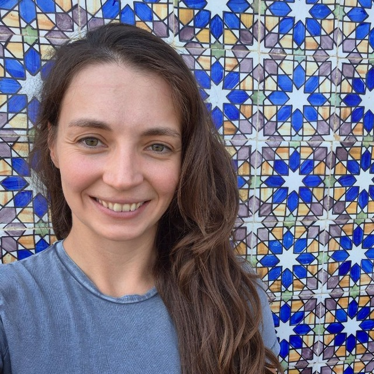

Luca Bortolussi
Principal Investigatortrustworthy GenAIneuro-explicitformal methods

Francesca Cairoli
RTTconformal predictionformal methodstime series

Gaia Saveri
Postdocneuro-explicitLLMinterpretability
Sara Candussio
PhD StudentLLMreasoning tracestrustworthy GenAI

Sandro Jr Della Rovere
PhD StudentML systemsanalog layout automation

Alessandro Della Siega
PhD Studentneuro-explicitinterpretabilitytime series

Romina Doz
PhD Studentformal methodsstochastic modelling
Nicholas Andrea Pearson
PhD Studenttime series
Lorenzo Cusin
MSc Studenttrustworthy GenAILLM